P.O. Box 1342 * Bellevue, WA 98009 * jlk@eskimo.com
 2000 Jane L. Kakaley
2000 Jane L. Kakaley
PART SEVEN
If you have not yet completed Part Six, please finish before continuing with Part Seven.
1. Arrange:
 one strip from Step 3, Part 6 and
one strip from Step 3, Part 6 and
one triangle from Step 6, Part 6
as shown in Figure 34.
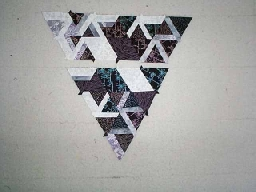
Figure 34
2. Sew together to create the triangle shown in Figure 35.
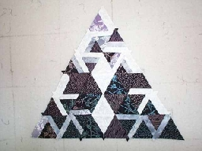
Figure 35
3. Repeat steps 1 and 2, making a total of 6(54) triangles.
4. Arrange six triangles from step 3 as shown in Figure 36.
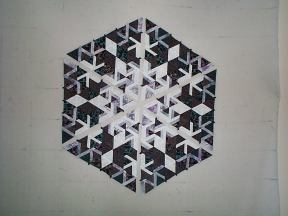
Figure 36
5. Sew together to create one(nine) hexagon(s).
6. Cut 2(18) 13 1/4" X 7 5/8" rectangles from the 7 5/8" strip(s) of fabric B.
7. Cut the 13 1/3" X 7 5/8" rectangles in half diagonally, from corner to corner, to make 4(36) triangles.
8. Arrange:
one hexagon from Step 5 and
four triangles from Step 7
as shown in Figure 37 and sew together.
(Repeat for a total of nine, if you are making the larger version.)
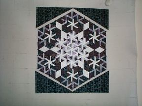
Figure 37
9. From the 2 1/4"(29") strips of fabric, cut 2(18) strips that measure 2 1/4" X 29".
10. Add a strip to each side of the block made in step 8, as shown in Figure 38. The strips will be 1 to 1 1/2" longer than you will need, trim them even with the rest of the block after they are sewn. (Repeat for a total of nine, if you are making the larger version.)
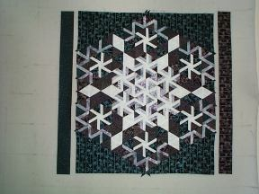
Figure 38
11. Arrange:
one fabric B triangle from Step 6, Part 3 and
one fabric W shape from Step 8, Part 6
as shown in Figure 39.
I forgot to tell you how many of the fabric W shape to cut in Part Six, Step 8. It has now been corrected.
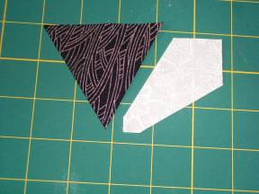
Figure 39
12. Sew together to create the unit shown in Figure 40.
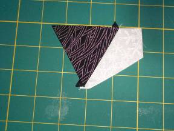
Figure 40
13. Arrange:
one unit from Step 12 and
one strip from Step 3, Part 4
as shown in Figure 41.
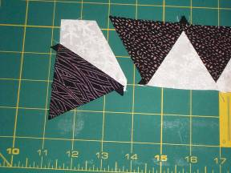
Figure 41
14. Sew together, stopping where the two 1/4" seam allowances intersect (Figure 42). The black line shows the stopping point. Take a couple of stitches in reverse, before cutting thread, to anchor.
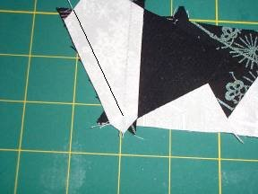
Figure 42
The end of your strip should now look like Figure 43.
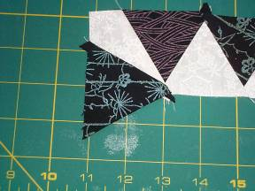
Figure 43
15. Repeat steps 11 through 14 for a total of 4(36).
16. Arrange:
one block from Step 10 and
four strips from Step 15
as shown in Figure 44.
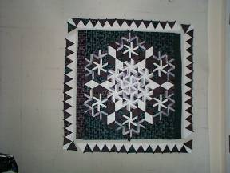
Figure 44
17. Sew each strip onto the block, stopping and starting where the 1/4" seam allowances intersect.
18. Sew the ends of the border strips together. (Repeat for a total of nine, if you are making the larger version.) Figure 45 shows your finished block.
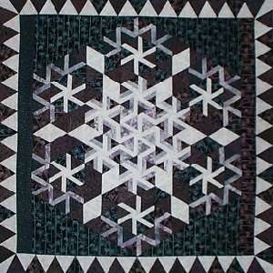
Figure 45
19. Sew the nine blocks together, as shown in Figure 46, if you are making the larger version.
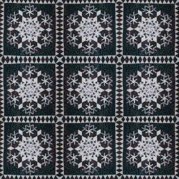
Figure 46
Your quilt top is now finished. Layer quilt top, batting and backing. Quilt as desired. Bind with the 4(10) 3" strips of fabric G.